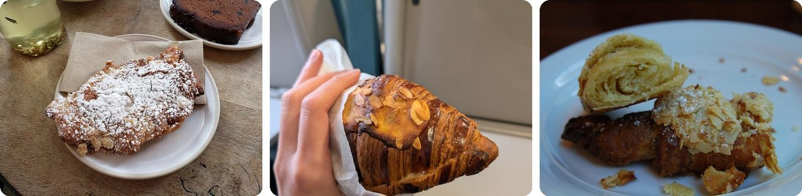
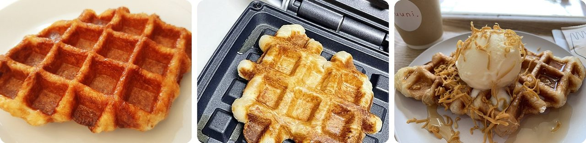
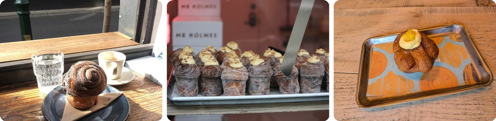
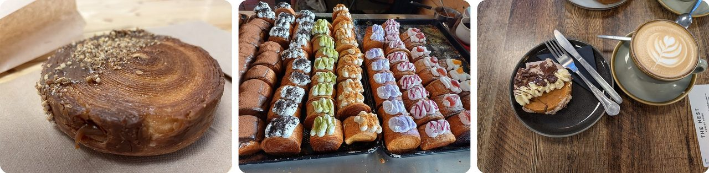
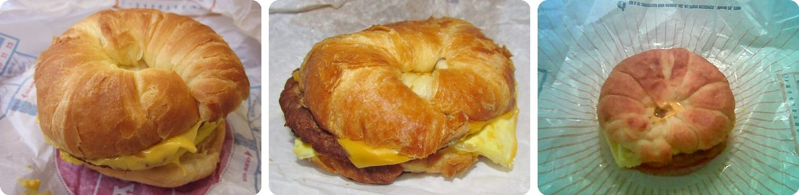
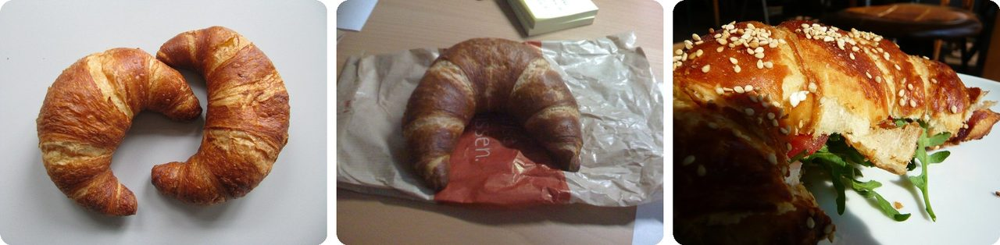
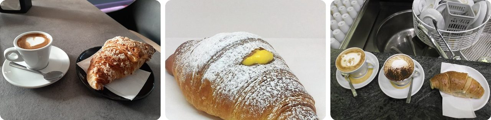
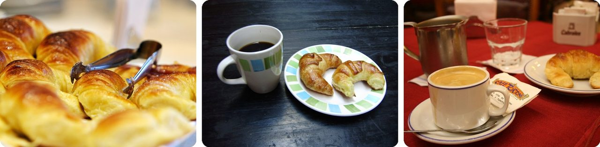
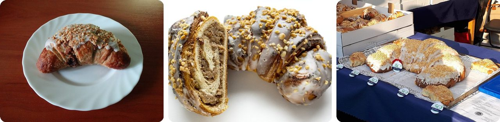

🌍 Top 10 Underrated Ways to Eat or Use Croissants
Oct 26, 2026
1. 🇫🇷 Almond croissants are often yesterday's leftovers in disguise

In French bakeries, the almond croissant is often made from plain croissants that didn't sell the day before. Bakers fill them with frangipane (a sweet almond cream), cover them in sliced almonds, and bake them again.Here's why that matters. A croissant is full of big air pockets, so it loses its moisture and goes hard faster than regular bread. A day-old one isn't much fun on its own, but filled with almond cream it gets a second life.
The result is rich: about 400 to 450 calories per 100 grams, around a fifth of what a typical adult eats in a whole day.
It's the bakery version of turning leftover rice into fried rice.
2. 🇰🇷 A croffle is a croissant squashed in a waffle iron

To make a croffle, you take raw croissant dough, roll it in sugar, and press it in a hot waffle iron. The sugar melts into a crispy, golden shell, and the grid pattern makes little pockets that catch syrup and toppings.A café called Aufglet started selling croffles in Seoul in November 2018. Then in 2020, people stuck at home during the pandemic started making them in their own kitchens and posting the photos online. By some estimates, waffle iron sales jumped 300% in a year, so about four times as many were sold.
Basically, a croissant that went through a sandwich press and came out better.
3. 🇺🇸 The cronut is croissant dough fried like a doughnut
French pastry chef Dominique Ansel spent two months working on it. He shaped croissant dough into a ring, fried it in grapeseed oil, and filled it with flavored cream. He started selling it at his bakery in New York on May 10, 2013.
A food blogger wrote about it that same night. By the third day, a line of more than 100 people had formed outside the shop. Nine days in, Ansel applied to trademark the name "Cronut," so nobody else could use it.
Making one properly takes three days from start to finish, even with his home recipe.
Think of it as a croissant that went for a swim in the deep fryer.
4. 🇦🇺 A cruffin is a croissant baked in a muffin tin

Take croissant dough, roll it up, drop it into a muffin tin, and let it rise and bake. You get a tall, swirly pastry that bakers fill with cream, jam or fruit curd. Kate Reid of Lune Croissanterie in Melbourne made the first known one in July 2013.A bakery in San Francisco, Mr. Holmes Bakehouse, made cruffins famous in the US in 2014. And here's the twist: in March 2015, its pastry chef, Ry Stephen, said someone broke in and stole the recipe binders for the cruffin and 230 other recipes. The thief left the money, the baking tools, an iPad and the computers behind. Nobody was ever charged.
In other words, a croissant that took the shape of its pan.
5. 🇺🇸 The New York roll is a croissant rolled into a flat circle

Instead of a crescent, croissant dough is rolled into a round, flat spiral. It's filled with pastry cream and topped with chocolate ganache (a glossy mix of chocolate and cream). Another name for it is the cromboloni: croissant plus bomboloni, the Italian cream-filled doughnut.Lafayette Grand Café and Bakery in New York made it in 2022 and first called it "The Suprême." Videos of people cutting into it got hundreds of thousands of views on TikTok. By 2023 it was selling in Paris and other French cities for 3 to 5 euros, and soon after anywhere from Lithuania to Indonesia.
It's a croissant shaped like a hockey puck, with a surprise inside.
6. 🇺🇸 Burger King turned the croissant into a breakfast sandwich in 1983

The Croissan'wich, short for croissant sandwich, came out in 1983. It's a croissant cut in half and filled with egg, American cheese, and sausage, bacon or ham. Until then, Burger King's breakfast menu was almost a copy of McDonald's.So Burger King picked a fight. Its TV ads asked people on the street to taste it next to McDonald's Egg McMuffin, and later used the slogan "Croissan'wich beat the stuffin' out of Egg McMuffin." Different countries fill it differently: Hawaii adds Spam, and Argentina uses ham.
Basically, a croissant doing a burger bun's job.
7. 🇩🇪 In southern Germany, croissants get the pretzel treatment

A Laugencroissant is a croissant glazed with lye before baking, the same strong alkaline liquid used on pretzels. People in southern Germany love it, and the German-speaking Swiss have their own version, the Laugegipfeli.The lye is what makes pretzels dark brown and shiny. Its high pH (the opposite of sour) speeds up browning in the oven, so the crust turns deep brown, just like a pretzel's. Baking soda works a bit, but lye works much more strongly.
Think of it as a croissant wearing a pretzel's jacket.
8. 🇮🇹 In Italy, a cornetto and a cappuccino are the classic breakfast

Cornetto means "little horn." It looks like a croissant, but it's usually softer and less crispy. It's often filled with custard, apricot jam or chocolate cream, and dusted with powdered sugar. In northern Italy, people call it a "brioche" instead.A cornetto and a cappuccino at a coffee bar is the most common breakfast in Italy. The pastry's ancestor, the Austrian kipferl, became popular in the Venice area after 1683, thanks to busy trade between Venice and Vienna.
In other words, it's Italy's coffee and a donut.
9. 🇦🇷 Argentines call croissants "half moons" and eat them all day

In Argentina and Uruguay, croissants are called medialunas, "half moons," because of their shape. Most are brushed with a sweet, sticky glaze.There are two main kinds. Medialunas de manteca ("of butter") are the sweet, glazed ones. Medialunas de grasa ("of lard") are made with lard, the white fat from pork, and aren't always sweet.
They show up with coffee at breakfast, at a light snack in the late morning, and again at merienda, the afternoon snack around tea time.
It's a croissant that never clocks out.
10. 🇵🇱 Poznań eats a special croissant every November 11

On St. Martin's Day, people in Poznań, Poland, buy huge numbers of rogale świętomarcińskie, St. Martin's croissants. These are filled with ground white poppy seeds, raisins, nuts and fruit, then coated in sugar icing and sprinkled with more nuts.A newspaper ad shows the tradition already existed by 1860. The local legend says a priest asked people in 1891 to help the poor, like Saint Martin did. A baker named Józef Melzer talked his boss into bringing back the old croissant custom: richer people bought them, and poor people got them free.
Since 2008, the name and recipe are protected by the European Union, so only the real thing can use the name. The city even has a croissant museum on its main square.
Picture a whole city sharing one birthday treat, with a saint as the guest of honor.
Fun fact
You may have heard that the croissant was invented in Vienna in 1683, when bakers working at night heard enemy soldiers digging tunnels under the city walls. It's a great story, but there's no record of it from that time. It spread mostly thanks to a food writer, Alfred Gottschalk, who told it in a 1938 food encyclopedia set in Budapest in 1686, then changed it to Vienna in 1683 in his 1948 book. Lots of famous foods come with origin stories like this, and finding out which ones are made up could be a fun rabbit hole of its own.
Photo credits (Wikimedia Commons)
- #1: Almond croissant - Bread & Milk 2024-06-27.jpg by Andy Li, CC0
- #1: Almond Croissant - Julien Plumart 2025-03-02.jpg by Andy Li, CC0
- #1: Almond Croissant - insides - Le Traiteur AUD4.50 (flickr) by avlxyz, CC BY-SA 2.0
- #2: Croffle 1.jpg by Scudsvlad, CC BY-SA 4.0
- #2: Making croffles 2.jpg by 박찹쌀, CC BY-SA 2.0 kr
- #2: Croffle, Muuni, Niigata, Niigata, Japan, March 2023.jpg by Tail furry, CC BY-SA 4.0
- #3: Dominique Ansel Bakery (15900018301).jpg by LWYang from USA, CC BY 2.0
- #3: Dominique Ansel - Cronut Insides 2 (16591975319).jpg by Daniel Zemans, CC BY 2.0
- #3: Cronut Line (flickr) by H.L.I.T., CC BY 2.0
- #4: Cruffin.jpg by Finbar Concaig, CC BY-SA 4.0
- #4: Cruffins at Mr. Holmes Bakehouse (TK1).JPG by Tobias Kleinlercher / Wikipedia, CC BY-SA 3.0
- #4: Mango & passionfruit cruffin - Mokoko Coffee & Bakery 2025-07-25.jpg by Andy Li, CC0
- #5: New York Roll.jpg by LittleT889, CC BY-SA 4.0
- #5: Cromboloni di Sandakan 01.jpg by Taufik, CC BY-SA 4.0
- #5: Bueno new york bun and latte - The Nest Coffee House 2025-12-29.jpg by Andy Li, CC0
- #6: BK Croissan'Wich.JPG by BrokenSphere, CC BY-SA 3.0
- #6: Burger King Sausage Croissanwich (23381873185).jpg by Willis Lam, CC BY-SA 2.0
- #6: Crossan'wich.jpg by Carey Tildon, CC BY 2.0
- #7: Laugencroissants.JPG by Sundar1, CC BY-SA 3.0
- #7: Laugencroissant (flickr) by GillyBerlin, CC BY 2.0
- #7: Laugencroissant mit Frischkäse (flickr) by WordRidden, CC BY 2.0
- #8: Cornetto e cappuccino.jpg by Ensahequ, CC BY-SA 4.0
- #8: Cornetto alla crema.jpg by Lasagnolo9, CC BY-SA 4.0
- #8: Roma - Cappuccini e cornetto al caffè Tazza d'Oro.jpg by Blackcat, CC BY-SA 4.0
- #9: Medialunas argentinas.jpg by David, CC BY 2.0
- #9: Café y medialunas en Buenos Aires.jpg by Ivanmartinez, CC BY-SA 3.0
- #9: Cafe cortado y un medialuna.jpg by Natalie HG, CC BY 2.0
- #10: Rogal świętomarciński 02.jpg by Rzuwig, CC BY-SA 3.0
- #10: Polish St. Martin's croissant (Rogal świętomarciński), halved.jpg by Polonist, CC BY 2.0
- #10: Megarogal marciński.jpg by Ostrzyciel, CC BY-SA 3.0


.jpg){kind=link}
.jpg){kind=link}

.JPG){kind=link}


.jpg){kind=link}


,_halved.jpg){kind=link}